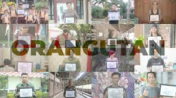

STORY BAND KOB
Terbentuknya group band ini merupakan akumulasi dari perjalanan keempat personil dalam mengaktualisasikan passion dalam bidang bermusik. King of Borneo Band Asal Kapuas Hulu, Berkarya Sampaikan Pesan Alam Angkat Isu Lingkungan.
-
Berdirinya Band KOB
Didirikan pada tahun 2016 oleh Aday, Awick, Oddi dan Deddi kata “King” yang digunakan tidak untuk menunjukkan eksistensinya, melainkan merujuk pada kedigdayaan alam Kalimantan serta isinya yang menjadi jantung kehidupan bagi organisme yang hidup disekitarnya, termasuk manusia.
-

Melalui Dari Musik
Melalui musiknya, King of Borneo berupaya untuk menyebarkan pesan tentang pentingnya menjaga alam karena King of Borneo percaya bahwa alam adalah episentrum dari segala hal yang “hidup” di dunia ini. Sebagai bagian dari masyarakat Kapuas Hulu, King of Borneo juga secara aktif menggabungkan unsur kearifan lokal ke dalam karyanya.
-
Mengembalikan Kebaikan
“It is time for humans to return the favor”. “Saatnya mengembalikan kebaikan yang alam telah berikan”. King of Borneo percaya bahwa masyarakat lokal telah lama, melalui tradisinya, memainkan peran penting dalam menjaga harmoni antara manusia dan alam. Segala hal yang diekspresikan oleh King of Borneo melalui karyanya merupakan manifestasi dari perjalanan keempat personilnya dalam menjelajahi dan mengapresiasi kekayaan alam Kalimantan.